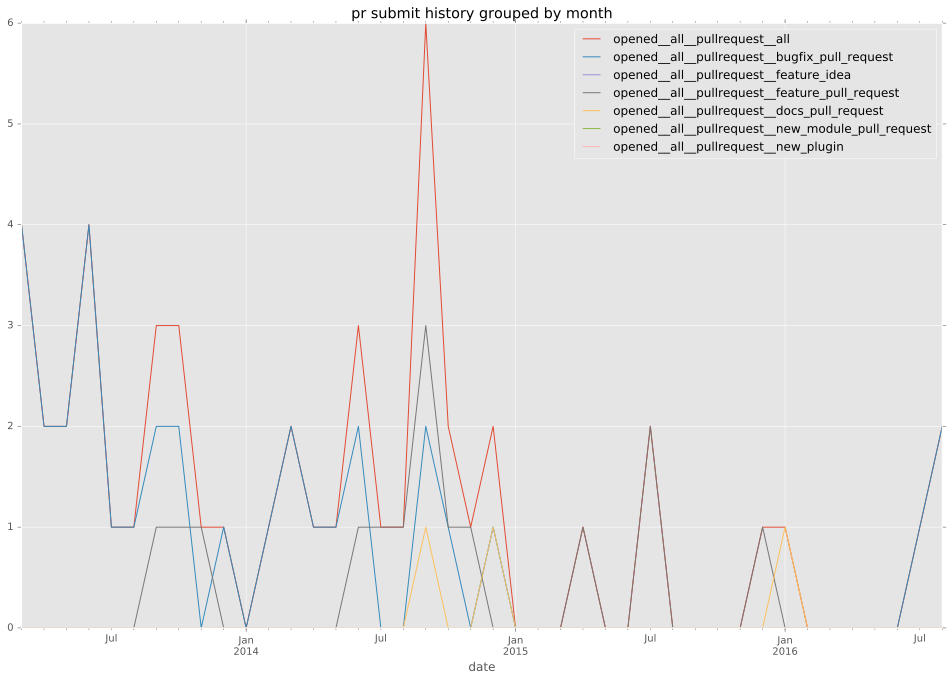
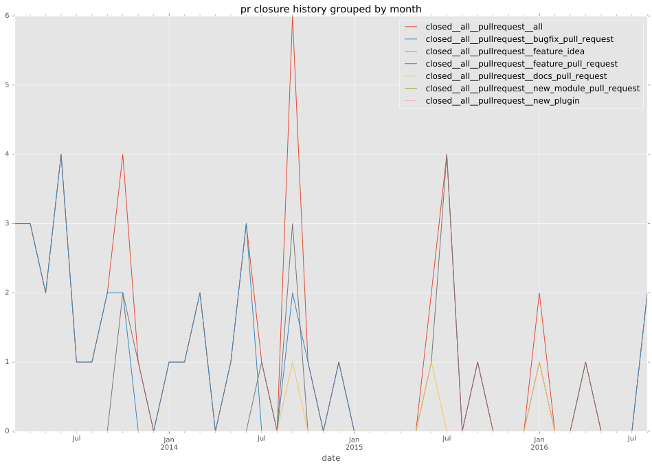

authors
- tastychutney
maintainers
- tastychutney
- scottanderson42
contributors
- danxshap : 3 commits
- risaacson : 2 commits
- vytisb : 1 commits
- adamhadani : 5 commits
- apollo13 : 1 commits
- jpmens : 1 commits
- mwarkentin : 1 commits
- pitabwire : 1 commits
- mpdehaan : 12 commits
- scottanderson42 : 66 commits
- sejo : 4 commits
- damycra : 2 commits
- jctanner : 5 commits
- faulkner : 2 commits
- grahamu : 1 commits
- cchurch : 4 commits
- zroger : 1 commits
- JanMalte : 1 commits
- joelcrocker : 1 commits
- dagwieers : 1 commits
- yarncheckout : 2 commits
- Ernest0x : 1 commits
- lorin : 3 commits
- ludat : 1 commits
total issue counts
bugfix pull request: 35
pullrequest: 54
docs pull request: 3
feature pull request: 16
feature idea: 5
issue: 14
bug report: 9
issue history
pullrequest history


days open by issue type
feature pull request
count: 24
std: 135.594657829
min: 0
max: 558
median: 50.5
mean: 96.5416666667
all
count: 86
std: 85.4943650594
min: 0
max: 558
median: 2.0
mean: 34.7674418605
pullrequest
count: 0
std: nan
min: nan
max: nan
median: nan
mean: nan
docs pull request
count: 5
std: 99.7155955706
min: 2
max: 186
median: 8.0
mean: 76.8
bugfix pull request
count: 48
std: 12.5900832021
min: 0
max: 64
median: 0.0
mean: 5.14583333333
feature idea
count: 2
std: 0.707106781187
min: 0
max: 1
median: 0.5
mean: 0.5
issue
count: 0
std: nan
min: nan
max: nan
median: nan
mean: nan
bug report
count: 7
std: 8.70686647477
min: 0
max: 24
median: 1.0
mean: 5.85714285714
closures grouped by total days open